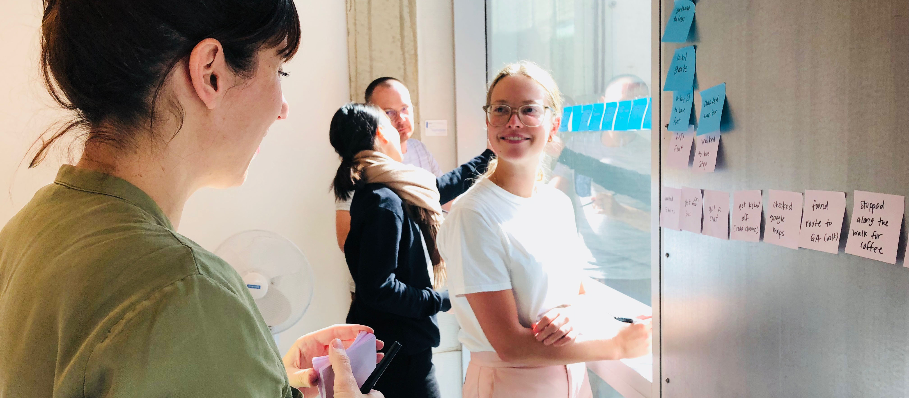

Originally from Montreal, Canada, I moved to London in September to study UX Design at General Assembly. Having recently completed the 10-week immersive, I am looking to work with a team that challenges me to continue to learn. I am excited to take my knowledge and interest to help make clever digital products and seamless experiences.

My UX Skills
Research
User Interviews
Affinity Mapping
Personas
Scenarios
Empathy Mapping
User Flow
Ideation
Site Navigation
Card Sorting
Wireframing
Usability Testing
My Path to UX
After a few years not feeling entirely fulfilled with the direction of my career, I discovered User Experience Design while working at a software company in Montreal. Incredibly interested, I was able to work as a part time intern, learning more about field and developing my skills. Wanting to learn more and hone my skills, I moved to London to attend General Assembly's UX Design Immersive, which has been an invaluable experience.